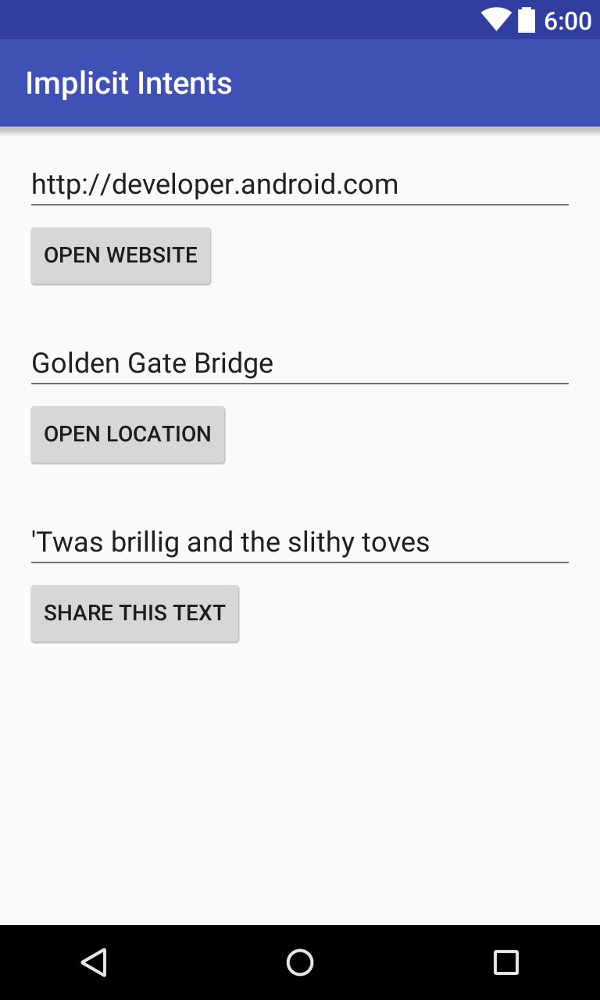
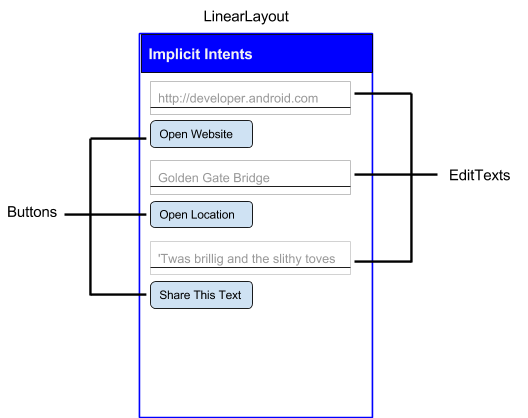
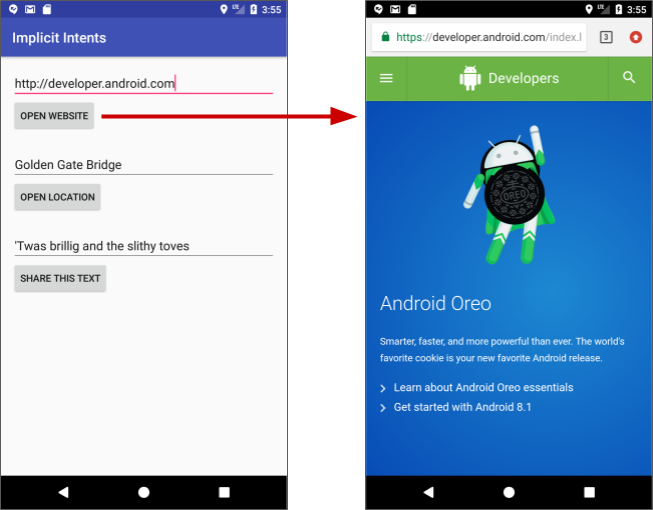
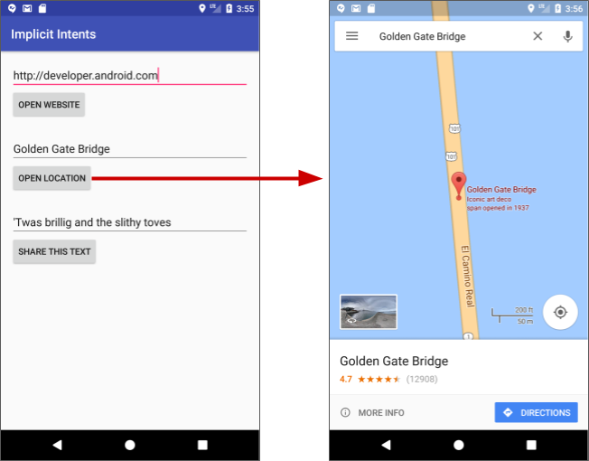
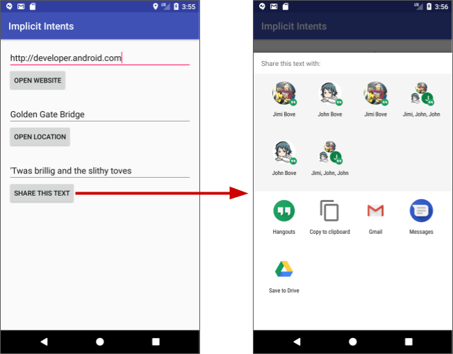
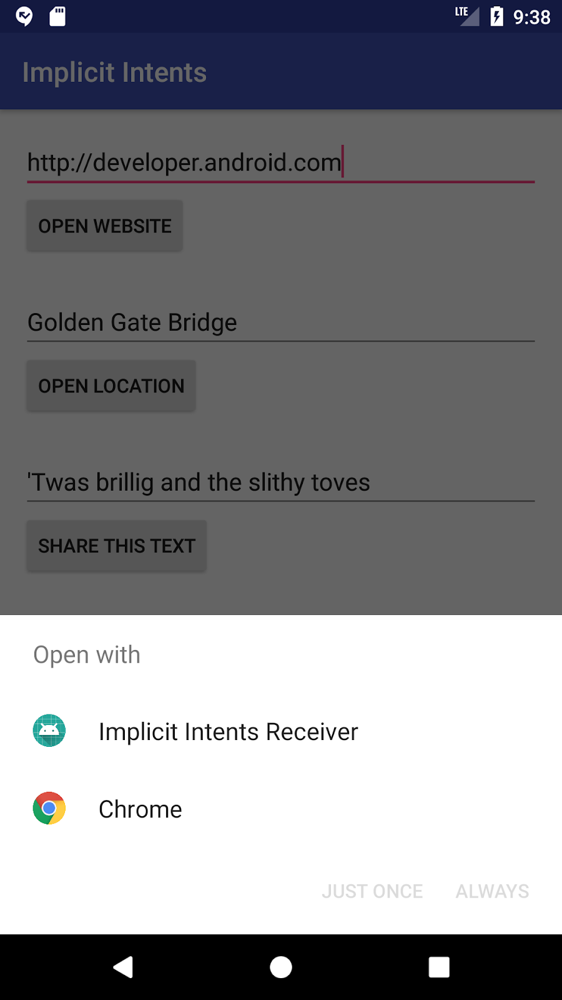

この実践的なコードラボはユニット 1:Android Developer Fundamentals (Version 2) コースの一部です。このコースでは、コードラボを順番に学習することで、このコースを最大限に活用することができます。
注：このコースでは、「Codelab」と「実践」という用語を入れ替えて使用しています。
序章
前のセクションでは、明示的インテントについて学びました。明示的インテントでは、アプリまたは別のアプリでアクティビティを実行するために、アクティビティの完全修飾クラス名を含むインテントを送信します。このセクションでは、暗黙のインテントと、それを使用してアクティビティを実行する方法について説明します。
暗黙のインテントを使用すると、どのアプリやアクティビティがタスクを処理するかを知らずにアクティビティを開始します。たとえば、アプリで写真を撮ったり、電子メールを送信したり、地図上に位置情報を表示したりする場合、通常、どのアプリやアクティビティがタスクを実行するかは気にしません。
逆に、アクティビティは、AndroidManifest.xmlファイルで1つ以上のインテントフィルタを宣言して、アクティビティが暗黙のインテントを受け入れることを宣伝し、アクティビティが受け入れるインテントのタイプを定義することができます。
デバイスにインストールされているアプリとリクエストを一致させるために、Androidシステムはあなたの暗黙のインテントを、インテントフィルタがアクションを実行できることを示しているアクティビティと一致させます。複数のアプリが一致した場合、ユーザーにはアプリの選択画面が表示され、どのアプリを使ってインテントを処理するかを選択することができます。
この実習では、以下の各タスクを実行するために暗黙のインテントを送信するアプリを作成します。
テキストを共有します。共有とは、電子メールやソーシャルメディアを介して情報の一部を他の人に送信することで、多くのアプリでよく使用されている機能です。共有アクションにはShareCompat.IntentBuilderクラスを使用します。
最後に、特定のアクションの暗黙のインテントを受け入れるシンプルなインテントレシーバを作成します。
すでに知っておくべきこと
できるようになるはずです。
What you'll learn
What you'll do
このセクションでは、1つのアクティビティとアクションの3つのオプションを持つ新しいアプリを作成します: Webサイトを開く、地図上の場所を開く、テキストのスニペットを共有します。すべてのテキストフィールドは編集可能ですが（EditText）、デフォルト値が含まれています。

この演習では、新しいレイアウトを持つ Implicit Intents という名前の新しいプロジェクトとアプリを作成します。
1.1 プロジェクトの作成
アクティビティ名（MainActivity）を受け入れます。レイアウト ファイルの生成（Generate Layout file）ボックスがチェックされていることを確認します。完了をクリックします。1.2レイアウトの作成
このタスクでは、アプリのレイアウトを作成します。このようにLinearLayout、3つのButton要素、3つのEditText要素を使用します。

<string name="edittext_uri">http://developer.android.com</string>
<string name="button_uri">Open Website</string>
<string name="edittext_loc">Golden Gate Bridge</string>
<string name="button_loc">Open Location</string>
<string name="edittext_share">\'Twas brillig and the slithy toves</string>
<string name="button_share">Share This Text</string>android.support.constraint.ConstraintLayoutをLinearLayoutに変更します。:orientation属性に値"vertical"を追加します。android:padding属性に値"16dp"を追加します。<LinearLayout xmlns:android="httgp://schemas.android.com/apk/res/android"
xmlns:app="http://schemas.android.com/apk/res-auto"
xmlns:tools="http://schemas.android.com/tools"
android:layout_width="match_parent"
android:layout_height="match_parent"
android:orientation="vertical"
android:padding="16dp"
tools:context="com.example.android.implicitintents.MainActivity">TextViewを削除します。EditText要素とButton要素が必要です。これらの属性値を使用します。EditText属性 | 値 |
|
|
|
|
|
|
|
|
ボタン属性 | 値 |
|
|
|
|
|
|
|
|
|
|
|
|
android:onClick属性の値は、後続のタスクでコールバック・メソッドを定義するまで、赤で下線が引かれたままになります。
（EditTextとButton）のセットを追加します。前のステップと同じ属性を使用しますが、以下のように変更します。(Webサイトを開くボタンから値をコピーして修正することができます)EditText属性 | 値 |
|
|
|
|
ボタン属性 | 値 |
|
|
|
|
|
|
android:onClick属性の値は、後続のタスクでコールバック・メソッドを定義するまで赤で下線が引かれたままになります。
（EditTextとButton）のセットを追加します。以下に示す属性を使用します。(ウェブサイトを開くボタンから値をコピーして修正することができます)EditText属性 | 値 |
|
|
|
|
ボタン属性 | 値 |
|
|
|
|
|
|
Android Studioのバージョンにもよりますが、activity_main.xmlのコードは以下のようになっているはずです。android:onClick属性の値は、後続のタスクでコールバック・メソッドを定義するまで赤で下線が引かれたままになります。
<LinearLayout xmlns:android="http://schemas.android.com/apk/res/android"
xmlns:app="http://schemas.android.com/apk/res-auto"
xmlns:tools="http://schemas.android.com/tools"
android:layout_width="match_parent"
android:layout_height="match_parent"
android:orientation="vertical"
android:padding="16dp"
tools:context="com.example.android.implicitintents.MainActivity">
<EditText
android:id="@+id/website_edittext"
android:layout_width="match_parent"
android:layout_height="wrap_content"
android:text="@string/edittext_uri"/>
<Button
android:id="@+id/open_website_button"
android:layout_width="wrap_content"
android:layout_height="wrap_content"
android:layout_marginBottom="24dp"
android:text="@string/button_uri"
android:onClick="openWebsite"/>
<EditText
android:id="@+id/location_edittext"
android:layout_width="match_parent"
android:layout_height="wrap_content"
android:text="@string/edittext_uri"/>
<Button
android:id="@+id/open_location_button"
android:layout_width="wrap_content"
android:layout_height="wrap_content"
android:layout_marginBottom="24dp"
android:text="@string/button_loc"
android:onClick="openLocation"/>
<EditText
android:id="@+id/share_edittext"
android:layout_width="match_parent"
android:layout_height="wrap_content"
android:text="@string/edittext_share"/>
<Button
android:id="@+id/share_text_button"
android:layout_width="wrap_content"
android:layout_height="wrap_content"
android:layout_marginBottom="24dp"
android:text="@string/button_share"
android:onClick="shareText"/>
</LinearLayout>このタスクでは、レイアウトの最初のボタン、Open Websiteのためのオンクリックハンドラメソッドを実装します。このアクションは、暗黙のインテントを使用して、その暗黙のインテントを処理できるアクティビティ(Web ブラウザなど)に与えられた URI を送信します。
2.1 openWebsite()の定義
activity_main.xmlXMLコード内の「openWebsite」をクリックします。Alt+Enter（Macの場合はOption+Enter）を押し、「MainActivity」の中の「Create 'openWebsite(View)'」を選択します。MainActivityファイルが開き、Android StudioがopenWebsite()ハンドラ用のスケルトンメソッドを生成します。
public void openWebsite(View view) {
}MainActivityでは、WebサイトURIのEditTextオブジェクトを保持するために、クラスの先頭にプライベート変数を追加します。private EditText mWebsiteEditText;MainActivityの onCreate()メソッドで、findViewById()を使用してEditTextインスタンスへの参照を取得し、そのプライベート変数に代入します。mWebsiteEditText = findViewById(R.id.website_edittext);2.2 openWebsite() にコードを追加する
openWebsite()メソッドに、EditText の文字列値を取得するステートメントを追加します。String url = mWebsiteEditText.getText().toString();Uri webpage = Uri.parse(url);.ACTION_VIEWをアクション、URIをデータとした新しいIntentを作成します。Intent intent = new Intent(Intent.ACTION_VIEW, webpage);このIntentコンストラクタは、明示的なIntent を作成する際に使用したものとは異なります。前のコンストラクタでは、現在のコンテキストとIntent を送信する特定のコンポーネント(Activityクラス) を指定しました。このコンストラクタでは、アクションとそのデータを指定します。アクションはIntentクラスによって定義され、ACTION_VIEW(与えられたデータを表示する)、ACTION_EDIT(与えられたデータを編集する)、またはACTION_DIAL(電話番号をダイヤルする) を含むことができます。この場合、Webpage変数のURIで指定されたWebページを表示したいので、アクションはACTION_VIEWになります。
resolveActivity()メソッドと Android パッケージマネージャを使用して、暗黙のIntent を扱えるActivityを探します。リクエストが正常に解決されたことを確認します。if (intent.resolveActivity(getPackageManager()) != null) {
}デバイスにインストールされているアプリのIntentフィルタを使用して、Intentアクションとデータを一致させるこのリクエスト。リクエストを処理できるActivityが少なくとも1つあることを確認するために使用します。
if文の中でstartActivity() を呼び出してIntent を送信します。startActivity(intent);テントが解決できなかった場合にログメッセージを表示するためのelseブロックを追加します。} else {
Log.d("ImplicitIntents", "Can't handle this!");
}openWebsite()メソッドは以下のようになるはずです。(わかりやすくするためにコメントを追加しました)
public void openWebsite(View view) {
// Get the URL text.
String url = mWebsiteEditText.getText().toString();
// Parse the URI and create the intent.
Uri webpage = Uri.parse(url);
Intent intent = new Intent(Intent.ACTION_VIEW, webpage);
// Find an activity to hand the intent and start that activity.
if (intent.resolveActivity(getPackageManager()) != null) {
startActivity(intent);
} else {
Log.d("ImplicitIntents", "Can't handle this intent!");
}
}このタスクでは、UI の 2 番目のボタン、Open Location 用のオンクリックハンドラメソッドを実装します。このメソッドはopenWebsite()メソッドとほぼ同じです。違いは、地図の位置を示すために geo URI を使用することです。緯度と経度を含む geo URI を使用することもできますし、一般的な位置を示すクエリ文字列を使用することもできます。この例では後者を使用しています。
3.1 openLocation() の定義
activity_main.xmlXMLコード内の「openLocation」をクリックします。Alt+Enter（Macの場合はOption+Enter）を押し、MainActivityで「Create 'openLocation(View)'」を選択します。Android StudioはMainActivityでopenLocation()ハンドラ用のスケルトンメソッドを生成します。
public void openLocation(View view) {
}MainActivityの上部にプライベート変数を追加して、Location URIのEditTextオブジェクトを保持します。private EditText mLocationEditText;onCreate()メソッドでfindViewByID() を使用してEditTextインスタンスへの参照を取得し、そのプライベート変数に代入します。mLocationEditText = findViewById(R.id.location_edittext);3.2 openLocation() にコードを追加する
openLocation()メソッドに、mLocationEditText EditTextの文字列値を取得するステートメントを追加します。String loc = mLocationEditText.getText().toString();Uri addressUri = Uri.parse("geo:0,0?q=" + loc);.ACTION_VIEWをアクション、locをデータとして、新しいIntentを作成します。Intent intent = new Intent(Intent.ACTION_VIEW, addressUri);テントを解決し、インテントが正常に解決されたことを確認します。そうであればstartActivity() を実行し、そうでなければエラーメッセージをログに記録します。if (intent.resolveActivity(getPackageManager()) != null) {
startActivity(intent);
} else {
Log.d("ImplicitIntents", "Can't handle this intent!");
}openLocation()メソッドは以下のようになります (わかりやすくするためにコメントを追加しました)。
public void openLocation(View view) {
// Get the string indicating a location. Input is not validated; it is
// passed to the location handler intact.
String loc = mLocationEditText.getText().toString();
// Parse the location and create the intent.
Uri addressUri = Uri.parse("geo:0,0?q=" + loc);
Intent intent = new Intent(Intent.ACTION_VIEW, addressUri);
// Find an activity to handle the intent, and start that activity.
if (intent.resolveActivity(getPackageManager()) != null) {
startActivity(intent);
} else {
Log.d("ImplicitIntents", "Can't handle this intent!");
}
}共有アクションは、ユーザーがアプリ内のアイテムをソーシャルネットワークや他のアプリと簡単に共有する方法です。暗黙のインテントを使用して独自のアプリで共有アクションを構築することもできますが、Androidでは ShareCompat.IntentBuilderヘルパークラスを使用すると、共有の実装が簡単になります。ShareCompat.IntentBuilderを使用してIntent を作成し、ユーザーに共有先のアプリを選択させるためのセレクタを起動することができます。
このタスクでは、ShareCompat.IntentBuilderクラスを使用して、テキスト編集でのテキストの共有を実装します。
4.1 shareText()の定義
activity_main.xmlのXMLコード内の「shareText」をクリックします。Alt+Enter（Macの場合はOption+Enter）を押して、MainActivityの中の「ShareText(View)を作成」を選択します。Android Studioでは、MainActivityでshareText()ハンドラ用のスケルトンメソッドを生成しています。
public void shareText(View view) {
}MainActivityの上部にEditTextを保持するためのプライベート変数を追加します。private EditText mShareTextEditText;onCreate()では、findViewById()を使用してEditTextインスタンスへの参照を取得し、そのプライベート変数に代入します。mShareTextEditText = findViewById(R.id.share_edittext);4.2 shareText() にコードを追加する
shareText()メソッドに、mShareTextEditText EditTextの文字列値を取得するステートメントを追加します。String txt = mShareTextEditText.getText().toString();String mimeType = "text/plain";ShareCompat.IntentBuilderを呼び出します。ShareCompat.IntentBuilder
.from(this)
.setType(mimeType)
.setChooserTitle("Share this text with: ")
.setText(txt)
.startChooser();.setChoosterTitleの値を文字列リソースに展開します。ShareCompat.IntentBuilderの呼び出しでは、これらのメソッドを使用します。
メソッド | 説明 |
| この |
| 共有するアイテムの MIME タイプ。 |
| システムアプリのセレクタに表示されるタイトル。 |
| 実際に共有するテキスト |
| システムアプリの選択画面を表示し、 |
この形式は、ビルダーのすべてのセッターメソッドを 1 つのステートメントにまとめたもので、簡単にIntent を作成して起動することができます。このリストに追加のメソッドを追加することができます。
shareText()メソッドは、以下のようになるはずです。
public void shareText(View view) {
String txt = mShareTextEditText.getText().toString();
String mimeType = "text/plain";
ShareCompat.IntentBuilder
.from(this)
.setType(mimeType)
.setChooserTitle(R.string.share_text_with)
.setText(txt)
.startChooser();
}4.3 アプリの実行
ボタンの上のEditTextにウェブサイトのURLを入力してブラウザを起動します。ブラウザとWebサイトは以下のように表示されるはずです。
ボタンの上のEditTextに位置情報が表示された地図が表示されます。位置情報を含む地図が以下のように表示されるはずです。

タスク4 解答コード
Android Studioプロジェクト。 ImplicitIntents
ここまでで、他のアプリのアクティビティを起動するために暗黙のインテントを使用するアプリを作成しました。このタスクでは、他のアプリから送信された暗黙のインテントにアプリ内のアクティビティが応答することを許可するという問題を逆から見てみましょう。
アプリ内のアクティビティは、明示的なインテントがあれば、アプリの内部からでも外部からでも常にアクティブにすることができます。アクティビティが暗黙のインテントを受信できるようにするには、アプリのAndroidManifest.xmlファイルにインテント フィルタを定義して、アクティビティがどのタイプの暗黙のインテントの処理に興味があるかを示します。
デバイスにインストールされている特定のアプリとリクエストを一致させるために、Android システムはあなたの暗黙のインテントを、インテントフィルタがそのアクションを実行できることを示すアクティビティと一致させます。一致するアプリが複数インストールされている場合、ユーザーには、そのIntent を処理するために使用するアプリを選択できるアプリセレクタが表示されます。
デバイス上のアプリが暗黙のインテントを送信すると、Android システムはそのインテントのアクションとデータを、適切なインテントフィルタを含む利用可能なアクティビティと一致させます。アクティビティのIntentフィルタがIntent と一致した場合。
アクティビティが 1 つだけの場合、Android はアクティビティにIntent自体を処理させます。このタスクでは、Web ページの URI を開くための暗黙のIntentを受け取る非常にシンプルなアプリを作成します。暗黙のインテントによってアクティブになると、そのアプリは要求されたURIを文字列としてTextViewに表示します。
5.1 プロジェクトとレイアウトの作成
アクティビティ名（MainActivity）を受け入れます。次へ（Next）をクリックします。TextViewで、android:text属性を削除します。このTextViewにはデフォルトではテキストはありませんが、onCreate()でIntentからURIを追加します。layout_constraint属性はそのままにして、以下の属性を追加します。属性 | 値 |
|
|
|
|
|
|
5.2 AndroidManifest.xmlを修正してIntentフィルタを追加する
AndroidManifest.xmlファイルを開きます。MainActivityにはすでにこのIntent-filterがあることに注意してください。<intent-filter>
<action android:name="android.intent.action.MAIN" />
<category android:name="android.intent.category.LAUNCHER" />
</intent-filter>デフォルトのプロジェクトマニフェストの一部であるこのIntentフィルターは、このアクティビティがアプリのメインエントリーポイントであること（"android.intent.action.MAIN"のIntentアクションを持っています）、そしてこのアクティビティがランチャーのトップレベルアイテムとして表示されるべきであること（そのカテゴリは"android.intent.category.LAUNCHER"です）を示しています。
activity>の中に2つ目のタグを <action android:name="android.intent.action.VIEW" />
<category android:name="android.intent.category.DEFAULT" />
<category android:name="android.intent.category.BROWSABLE" />
<data android:scheme="http" android:host="developer.android.com" />これらの行は、アクティビティのためのIntentフィルタを定義します。このIntentフィルタはこれらの要素を宣言します。
フィルタのタイプ | 値 | マッチ |
働き |
| ビューアクションを持つ任意のイン |
カテゴリ |
| 任意の暗黙のイン |
カテゴリ |
| Webページやメールなどからの閲覧可能なリンクのリクエスト |
データ |
|
|
データフィルタは受け入れるリンクの種類と、それらの URI のホスト名の両方に制限があることに注意してください。受信機がリンクを受け付けることを希望する場合は、要素を省略することができます。
AndroidManifest.xmlのapplicationセクションは以下のようになるはずです。
<application
android:allowBackup="true"
android:icon="@mipmap/ic_launcher"
android:label="@string/app_name"
android:roundIcon="@mipmap/ic_launcher_round"
android:supportsRtl="true"
android:theme="@style/AppTheme">
<activity android:name=".MainActivity">
<intent-filter>
<action android:name="android.intent.action.MAIN" />
<category android:name="android.intent.category.LAUNCHER" />
</intent-filter>
<intent-filter>
<action android:name="android.intent.action.VIEW" />
<category android:name="android.intent.category.DEFAULT" />
<category android:name="android.intent.category.BROWSABLE" />
<data android:scheme="http"
android:host="developer.android.com" />
</intent-filter>
</activity>
</application>5.3 インテントの処理
アクティビティの onCreate()メソッドで、入力されたIntentに含まれるデータや余分なものを処理します。この場合、入力される暗黙のIntentには、Intentデータに格納されている URI があります。
onCreate() メソッドで、アクティビティのアクティブ化に使用された受信Intentを取得します。Intent intent = getIntent();Intentデータを取得します。Intentデータは常にURIオブジェクトです。Uri uri = intent.getData();uri変数がnullでないことを確認します。そのチェックが通過した場合、そのURIオブジェクトから文字列を作成します。if (uri != null) {
String uri_string = "URI: " + uri.toString();
}"URI: "部分を文字列リソース(uri_label)に展開します。ifブロック内で、メッセージのTextViewを取得します。TextView textView = findViewById(R.id.text_uri_message);ifブロック内で、そのテキストビューのテキストをURIに設定します。textView.setText(uri_string);MainActivityのonCreate()メソッドは以下のようになります。
@Override
protected void onCreate(Bundle savedInstanceState) {
super.onCreate(savedInstanceState);
setContentView(R.layout.activity_main);
Intent intent = getIntent();
Uri uri = intent.getData();
if (uri != null) {
String uri_string = getString(R.string.uri_label)
+ uri.toString();
TextView textView = findViewById(R.id.text_uri_message);
textView.setText(uri_string);
}
}5.4 両方のアプリを実行する
暗黙のインテントを受信した結果を表示するには、エミュレータまたはデバイス上で Implicit Intents Receiver アプリと Implicit Intents アプリの両方を実行します。
アプリを単独で実行すると、テキストのない空白のアクティビティが表示されます。これは、アクティビティが他のアプリのインテントではなく、システム ランチャーからアクティブ化されたためです。
アプリの選択画面が表示され、デフォルトのブラウザ（下の図ではChrome）を使用するか、Implicit Intents Receiverアプリを使用するかを尋ねてきます。Implicit Intents Receiver を選択し、Just Once をクリックします。Implicit Intents Receiver アプリが起動し、メッセージには元のリクエストの URI が表示されます。

受信者アプリには、正確な URI プロトコル(http) とホスト(developer.android.com) のみにマッチする非常に制限的なIntentフィルタがあります。他の URI はデフォルトの Web ブラウザで開きます。
タスク5のソリューションコード
Android Studioプロジェクト。 ImplicitIntentsReceiver
注意:すべてのコーディングチャレンジは任意であり、後のレッスンの前提条件ではありません。
課題:以前の実践的な課題では、リストを表示するアクティビティと、アイテムを選択する別のアクティビティを持つショッピングリストアプリビルダーを作成しました。買い物リストのアクティビティにEditTextとButtonを追加して、地図上で特定のお店を見つけることができます。
テントを使用すると、アクションが分かっていても、そのアクションを処理する特定のアプリやアクティビティが分からない場合に、アクティビティをアクティブにすることができます。を受け取ることができるアクティビティは、AndroidManifest.xmlファイル内で、1つ以上のインテントアクションとカテゴリにマッチするインテントフィルタを定義する必要があります。Intentの内容と利用可能なアクティビティのIntentフィルタを照合して、どのアクティビティをアクティブにするかを決定します。利用可能なアクティビティが複数ある場合は、ユーザーが選択できるようにセレクタが提供されます。ShareCompat.IntentBuilderクラスを使用すると、ソーシャルメディアや電子メールでデータを共有するための暗黙のインテントを簡単に作成することができます。関連する概念のドキュメントは、2.3: 暗黙の意図にあります。
Androidの開発者向けドキュメント。